Что сломано, что задумывалось и что мы предлагаем
Мы прошли продукт руками как платящий пользователь. 16 находок: 11 багов, 5 предложений, 2 блокера. Каждая — что сломано, почему так вышло, что из этого получает пользователь и что делать.
Три корня
Мы прошли продукт руками как платящий пользователь: курс, упражнения, ИИ-ментор, генеративные ассистенты, выдача сертификатов, биллинг. 16 находок сводятся к трём корням — и два из них упираются в деньги напрямую.
Ручной проход 22–23 сентября 2026.
Три корня
01 Продукт мешает себе получать деньги
Кнопка реактивации подписки не работает, а предложение продлить всплывает каждые 2–3 действия. Продукт не даёт заплатить тому, кто хочет, и выпрашивает у того, кто не хочет — на одном и том же пользователе после одной и той же отмены.
находки 01 и 0502 Продукт берёт данные не из того источника
Сертификат челленджа печатает описание чужого курса, страница плана показывает устаревшее превью, ассистент не видит заполненную форму, онбординг не переносится в аккаунт и запускается заново. Единой сборки нет: каждое место тянет поля откуда придётся.
находки 01, 04, 06 и 1603 Продукт не помнит, где находится ученик
Ментор на главном экране не знает позицию в курсе, урок откатывается к началу, роадмап после завершения модуля прыгает в самый верх.
находки 07 и 13Приоритеты
| # | Находка | Severity | Охват | Эффорт |
|---|---|---|---|---|
| 01 | Сертификат челленджа печатает программу другого курса | S2 | все выпускники Basics | одно поле |
| 02 | Кнопка реактивации подписки не работает | S1 | все вернувшиеся | средний |
| 03 | Экран ошибки без выхода | S1 | неизвестен | средний |
| 04 | На странице плана сертификат показывает старое имя | S3 | страница плана | малый |
| 05 | Оффер после отмены показывается каждые 2–3 действия | S2 | все отменившие | малый |
| 06 | Форма Personalize не доезжает до ассистента | S2 | все инструменты | средний |
| 07 | ИИ-ментор не знает позицию на главном экране | S2 | все платящие | подключение |
| 08 | Иконки наград пропадают при загрузке | S2 | плавающий | малый |
| 15 | Приложение вылетает, интерфейс тормозит, ИИ отвечает долго | S2 | приложение | разбор |
| 16 | Онбординг повторяется, план выбирается сам | S2 | все новые | средний |
| 09 | Сертификат оформлен как игровая ачивка | Предложение | все выпускники | дизайн |
| 10 | Разбор ошибки есть, но его не находят | Предложение | каждое упражнение | почти ноль |
| 11 | Настройка шрифта названа «Typescale» и спрятана | Предложение | ядро 45+ | почти ноль |
| 12 | В уроке нет режима прослушивания | Предложение | мобильные | средний |
| 13 | Позиция не сохраняется — в уроке и на роадмапе | S3 | каждый урок | малый |
| 14 | Финальный сертификат не вручают — он просто появляется | Предложение | все дошедшие | средний |
Порядок — как чинить. Первые десять строк отсортированы по тому, сколько стоит бездействие, а не по severity.
Блокеры
Две находки уровня S1. Обе про то, что человек упёрся в стену и выйти из неё продукт не даёт.
02Кнопка реактивации подписки не работает
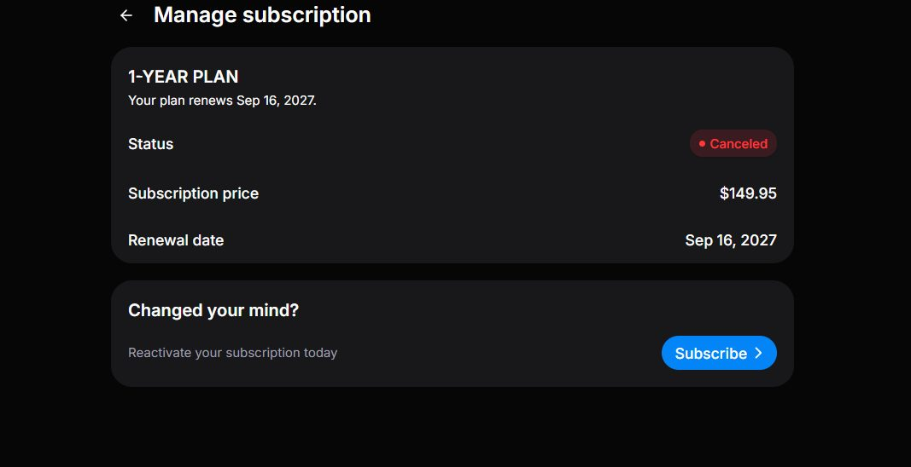
Подписка в статусе Canceled, доступ действует до 16 сентября 2027. Блок «Changed your mind? Reactivate your subscription today» с кнопкой Subscribe. Кнопка не работает.
Реактивацию не сделали отдельным сценарием: кнопка ведёт в обычный флоу покупки, а он отказывается создавать подписку, потому что у аккаунта уже есть запись — план отменён, но не истёк. Состояние «отменена, но ещё активна» не обработано: для биллинга человек подписан, для интерфейса уже нет.
На этом экране Subscribe — единственный способ вернуться, и он не работает. Все остальные находки про то, чего не получил пользователь. Эта — про то, чего не получает компания. Момент исключительный: человек уже отменил, передумал и вернулся сам — без письма, без скидки, без напоминания. Это самый дешёвый доход, который бывает. Второго раза не будет: решение «передумать» принимается один раз, и когда оно не срабатывает, человек уходит с подтверждением, что отменял не зря. И это не видно ни в одной метрике: отменившийся, который пытался вернуться и не смог, в отчётах неотличим от того, кто не пытался.
Развести два состояния. Если подписка отменена, но период не закончился — Subscribe просто снимает отмену: одно действие над существующей записью, без нового платежа и повторного ввода карты. Если период истёк — вести в оплату с предзаполненными данными. Поставить на этот клик отдельный мониторинг: нажатие Subscribe в статусе Canceled напрямую конвертируется в деньги и не должно теряться молча.
03Экран ошибки без выхода
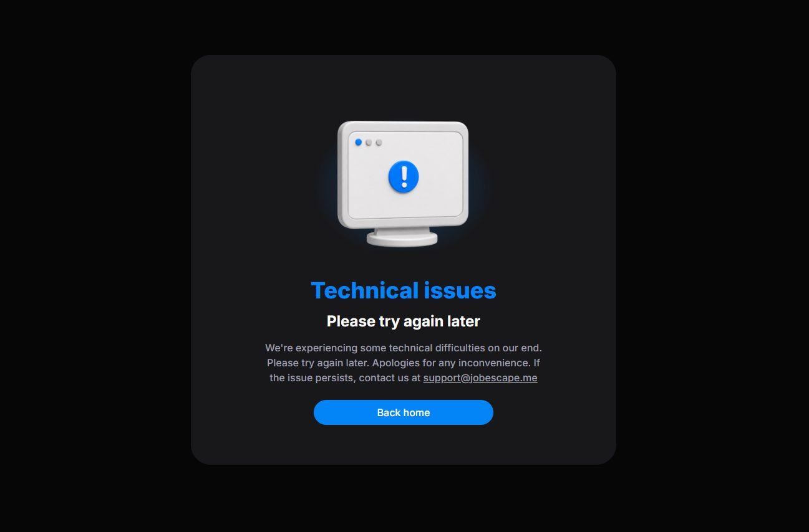
Кнопка «Back home» не срабатывает, обновление страницы возвращает тот же экран. Единственный выход, который предлагает продукт, не работает.
Заглушка рассчитана на временный сбой. Но то, что обновление не помогает, — улика: состояние устойчивое. Кнопка, вероятно, делает клиентскую навигацию внутри уже упавшего состояния и снова попадает в тот же экран.
Текст «Please try again later» в устойчивом состоянии вводит в заблуждение: человек ждёт вместо того, чтобы обратиться в поддержку. А упёршийся в тупик обычно и не пишет — он требует возврат или молча уходит. В отчётах это выглядит как рефанд, а не как ошибка. Продукт может не знать о масштабе: баг не виден там, где его ищут.
Жёсткий полный переход на корень вместо клиентской навигации. Показать код ошибки — сейчас человек пишет в поддержку без единой зацепки. «Написать в поддержку» сделать кнопкой, а не почтой текстом. И убрать «try again later» там, где состояние не проходит само.
Баги
01Сертификат челленджа печатает программу другого курса
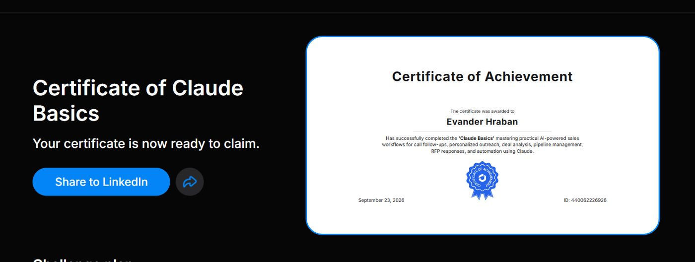
На сертификате за челлендж «Claude Basics» напечатано описание Claude for Sales — закрытого направления. Название курса верное, а фраза при этом рассыпается грамматически. На других челленджах сертификат корректный: «…completed the 'Claude Basics' mastering practical AI-powered sales workflows for call follow-ups, personalized outreach, deal analysis…»
Название подставляется из карточки курса, а описание берётся откуда-то ещё. На остальных курсах текст верный, значит механизм в целом рабочий — сбой в источнике одного поля. В аккаунте при этом лежит сертификат Claude for Sales, поэтому вероятнее не «в карточке Basics чужой текст», а «карточка берёт описание не из того сертификата».
Главная кнопка на этом экране — Share to LinkedIn. Продукт своим основным призывом толкает человека опубликовать в профессиональной сети документ о том, что он прошёл курс по продажам. Ущерб выходит наружу и остаётся там. Сертификат кладут в резюме — это единственное, ради чего его берут. Неверное содержание здесь не косметика, а основание для претензии.
Назначить полю описания один явный источник — карточку курса, — и сделать его обязательным: при пустом не рендерить хвост фразы, а не подставлять дефолт от другого курса. Заодно починить связку в шаблоне: сейчас между названием и описанием потеряно слово.
04На странице плана сертификат показывает старое имя
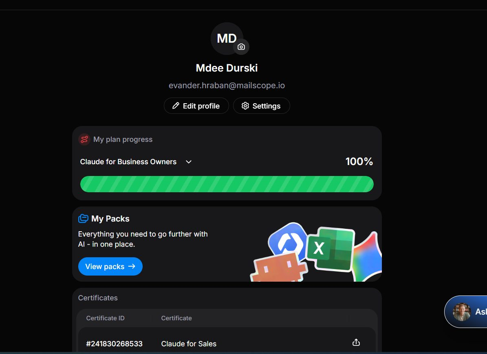
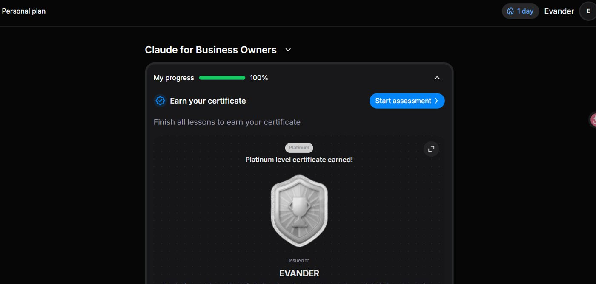
Имя изменено в профиле, но на странице персонального плана сертификат по-прежнему показывает прежнее — EVANDER. При этом в документе, который уходит при шаринге в LinkedIn, имя уже исправлено. На сертификатах челленджа оно тоже обновилось.
Карточка на странице плана — это закэшированное превью, собранное в момент выдачи. Шаринг и выгрузка рендерят документ заново из актуальных данных, поэтому там имя правильное. Сами данные в порядке; устарело только то, что человек видит у себя.
Наружу ничего плохого не уходит — и это главное, что отличает находку от первого впечатления. Человек видит у себя документ с чужим именем и не знает, что при публикации оно исправится. Разумное поведение в этой ситуации — не публиковать. То есть баг не портит сертификат, он останавливает шаринг — а шаринг это единственный бесплатный канал привлечения и основа реферальной петли. Кнопку просто не нажмут, и никто не узнает почему. Плюс нагрузка на поддержку: «у меня в сертификате не то имя» — тикет, который будут писать, хотя реальной проблемы за ним нет.
Сбрасывать кэш превью при изменении профиля — или собирать превью тем же рендером, что и документ при шаринге. Самое дешёвое решение: на карточке подставлять актуальное имя из профиля, не полагаясь на сохранённое изображение. Отдельно завести поле «имя для сертификата» с подписью, что печатается именно оно: написание фамилии у людей часто не совпадает с тем, что удобно держать в интерфейсе.
05Оффер после отмены показывается каждые 2–3 действия
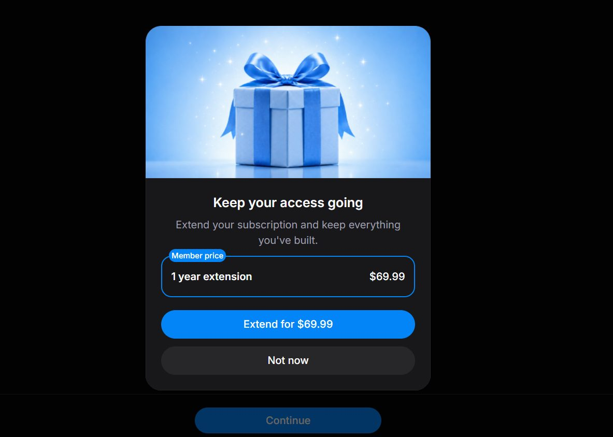
После отмены подписки модалка «Keep your access going — Extend for $69.99» всплывает каждые 2–3 действия. Убрать её насовсем нельзя: есть только «Not now», после которого она возвращается через пару шагов.
Задумано как удерживающая кампания, но реализовано без частотного лимита и без памяти об отказе. «Not now» не сохраняет состояние — кнопка обещает отсрочку и не даёт её. Формально работает, по сути лжёт, и это отдельный ущерб: после такой кнопки человек перестаёт верить остальным. Момент выбран неверно: подписка отменена, но доступ действует ещё год. Продукт настойчиво предлагает продлить то, что не кончается.
Человек, только что отменивший подписку, находится в самом раздражённом состоянии за весь путь — и именно на него направлено самое настойчивое давление в продукте. Это не гипотеза: в свободных ответах онбординга есть дословная жалоба — «stop trying to get me to spend more money or I quit». Дальше обесценивается сама скидка: $69.99 за год выглядят выгодно ровно один раз, на десятый показ оффер читается как помеха, и человек учится закрывать его не читая. И это ломает механизм возврата — задолбанный модалкой не пойдёт искать кнопку реактивации, которая, как мы выяснили, всё равно не работает.
Ограничить частоту: не больше одного показа за сессию и двух-трёх за весь период до истечения доступа. «Not now» должна откладывать на дни, а не на действия, и после второго отказа предложение не показывать совсем. Добавить явное «Не предлагать больше» — прямой отказ дешевле потерянного пользователя. Убрать оффер из модалки поверх работы на экраны, где человек и так бывает: страница подписки, письмо. И привязать к смыслу, а не к счётчику действий — показывать перед истечением доступа, когда потеря реальна, а не за год до неё.
06Форма Personalize не доезжает до ассистента
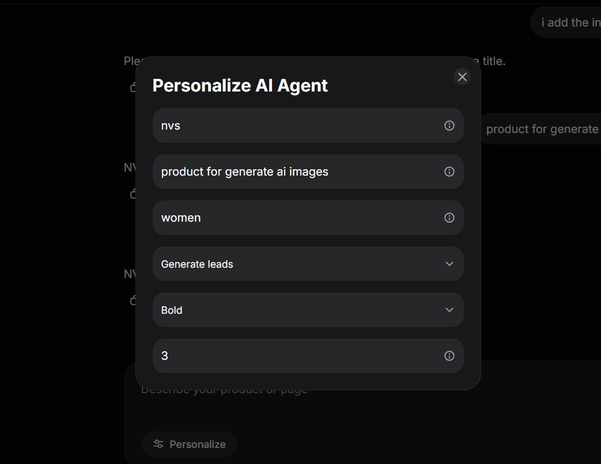
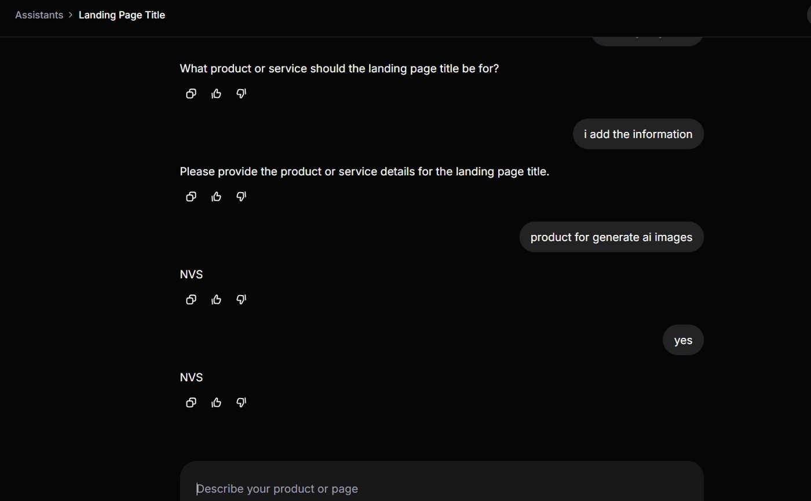
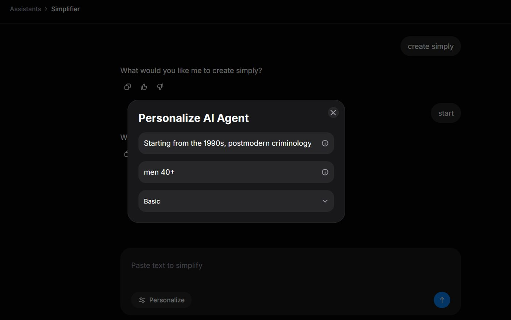
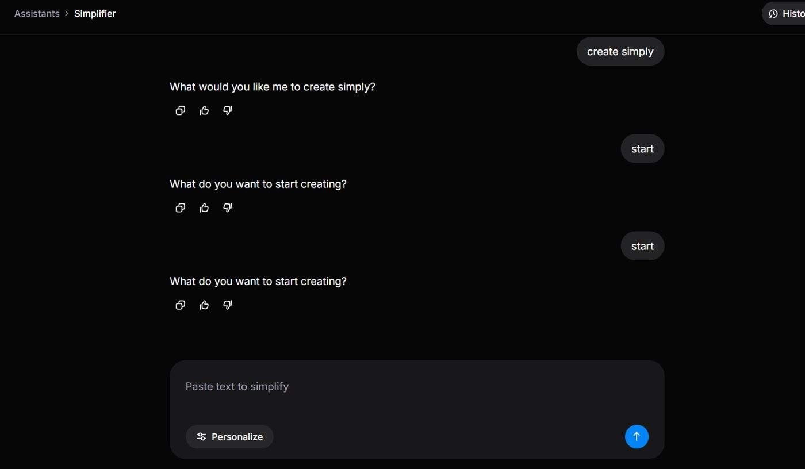
Landing Page Title. Человек заполнил форму — бренд, продукт, аудитория, цель, тон, 3 варианта. Ассистент всё равно спросил, для какого продукта делать заголовок, заставил ввести то же самое в чат и выдал одно слово: NVS. Название бренда вместо заголовка, один вариант вместо трёх, и дважды подряд. Simplifier. В форме есть поля «Text to simplify» и «Audience». В чате плейсхолдер предлагает вставить текст второй раз. На «start» ассистент отвечает вопросом, получает «start» ещё раз и задаёт тот же вопрос снова. Выхода из петли нет.
Значения формы не доезжают до промпта размеченными полями. Похоже, они склеиваются в строку без подписей — «nvs, product for generate ai images, women, Generate leads, Bold, 3», — и модель не понимает, что здесь чем является: первое значение принимает за ответ и возвращает его. Косвенное подтверждение — сама форма: у полей нет подписей, только значения и иконка. Назначение поля не видно ни человеку, ни модели. Глубже: чат и форму строили отдельно, форму добавили позже, и продукт не решил, какой из двух входов главный.
Это не урок, а инструмент — то, ради чего продукт покупают: три четверти приходят ради рабочих задач. Человек потратил время на форму, ответил на те же вопросы второй раз и получил слово, которое сам же и ввёл. Работу попросили и выбросили. Вывод, который он делает, — «ИИ не работает», хотя не работает обвязка продукта. И это худший из возможных выводов именно здесь: продукт продаёт тезис «ты используешь Claude на пять процентов возможностей» — и собственным инструментом выдаёт результат хуже, чем человек получил бы, написав запрос в Claude напрямую. Обещание опровергается внутри оплаченного продукта. Добавьте барьер, который в квизе называет почти половина покупателей: «не знал, с чего начать». Первое, что они видят, — пустое поле чата. Форма этот барьер снимала, но она не работает.
Один вход, один источник истины: форма ведущая, чат — доработка. Ассистент открывается карточкой полей прямо в ленте, а не модалкой поверх пустого чата, и без приветственного вопроса. Поля подписаны, обязательные помечены, кнопка неактивна, пока нет текста, и рядом сказано, чего не хватает. По нажатию карточка сворачивается в строку — «Текст 1 240 симв. · для men 40+ · Basic» с кнопкой «Изменить», — и следом приходит результат. После результата плейсхолдер меняется на «Что поправить?». Значения передавать в промпт размеченными ролями, а не строкой. Заданное число вариантов соблюдать. Перед показом проверять выход: если он короче нескольких слов или дословно совпадает со значением поля, это не результат — перегенерировать. И запретить задавать один и тот же вопрос дважды подряд.
07ИИ-ментор не знает позицию на главном экране
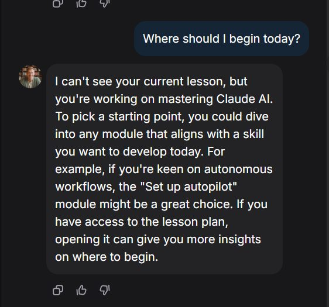
На уроках ментор отвечает на содержательные вопросы нормально, а в упражнении знает задание и разбирает ошибку. Но на главном экране на вопрос «где мне начать сегодня» он отвечает, что не видит текущий урок, и предлагает открыть план самому: «I can't see your current lesson… If you have access to the lesson plan, opening it can give you more insights.» Отвечать он умеет — он не знает, где человек находится и что уже пройдено.
Контекст передаётся ментору только из урока и упражнения — туда уходит задание. Чат на главном экране открывается пустым: в него не приходит ни позиция в курсе, ни пройденное. Механизм передачи построен и работает, просто к главному экрану не подключён.
Главный экран — первое место, где человек пробует ментора, и он ещё не в уроке. Самый естественный первый вопрос здесь — «с чего начать». Именно на нём ментор сообщает, что ничего о человеке не знает. Первое впечатление о ключевой фиче складывается на её худшем ответе. Дальше срабатывает не разовое раздражение, а отказ: человек делает вывод, что ментор бесполезен, и больше к нему не возвращается — в том числе там, где тот работает хорошо. Продукт теряет фичу, которую уже построил и которую квиз продаёт.
Передавать в чат на главном экране тот же контекст, что уже уходит в упражнения: активный урок, пройденные, ответы квиза. Ответ на «с чего начать» должен быть конкретным — назвать урок и открыть его кнопкой. Отдельно запретить ментору называть модули, которых нет в программе: в нашем случае он предложил «Set up autopilot».
08Иконки наград пропадают при загрузке
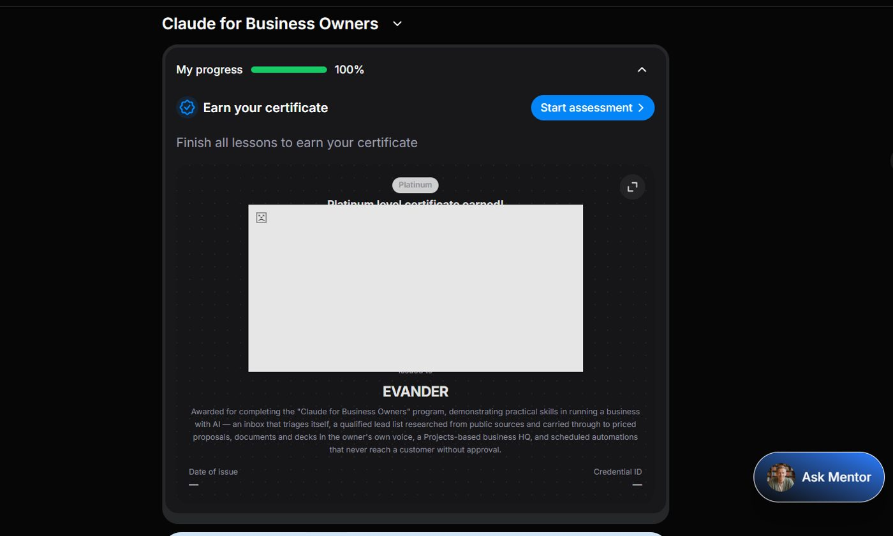
Иногда изображения наград не прогружаются: на месте кубка остаётся пустое место или серый прямоугольник с иконкой битого изображения, который вдобавок перекрывает заголовок «…level certificate earned!». Ловится не постоянно — на повторном заходе те же карточки рисуются нормально. Когда случается, пропадают сразу все уровни: Bronze, Silver, Gold, Platinum. Отдельно на том же экране: прогресс показывает 100%, подпись рядом говорит «Finish all lessons to earn your certificate», и тут же стоит кнопка аттестации. Три сигнала противоречат друг другу.
Плавающий отказ загрузки: изображения приходят отдельными запросами, и когда те не успевают или отваливаются, карточка уже отрисована. Состояния загрузки и фолбэка у неё нет, поэтому вместо скелета показывается сломанный макет. То, что пропадают все уровни разом, указывает на общий источник картинок, а не на отдельную карточку. Подпись «Finish all lessons» статическая и не завязана на прогресс, поэтому противоречит цифре прямо над ней.
Это экран выдачи награды — точка, где сходятся гордость и вся монетизация выдачи. Сертификат без изображения превращается в текст на тёмном фоне: публиковать нечего, а рядом стоят пять кнопок шаринга. Вместо «я справился» он получает «а засчиталось ли вообще?». Сомнение в том, засчитано ли достижение, — самое дорогое, что может случиться в этой точке: дальше либо тикет в поддержку, либо недоверие к сертификату, который мы же собираемся просить опубликовать.
Поставить мониторинг на загрузку иконок: баг плавающий, поэтому в ручном тесте его легко не поймать, а у пользователя он случается регулярно. Не рендерить карточку, пока нет данных: показывать скелет, а при неудачной загрузке — фолбэк, не пустой прямоугольник. Пустые Date of issue и Credential ID не выводить прочерками: либо значение, либо строки нет. Подпись завязать на состояние — при пройденных уроках она не может говорить «finish all lessons». И развести прогресс с аттестацией: либо включать её в шкалу, либо называть шкалу «уроки пройдены», а не «my progress».
13Позиция не сохраняется — в уроке и на роадмапе
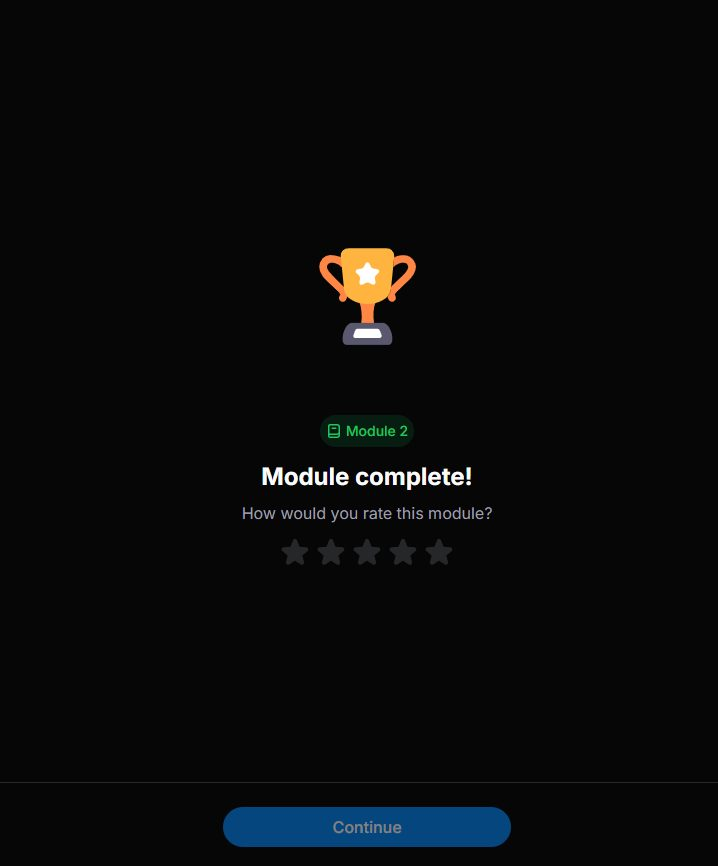
Обновление страницы внутри урока возвращает на его начало. На последнем экране модуля прогресс не засчитывается, пока не нажат Continue. А после прохождения последнего модуля роадмап открывается в самом верху, и только что открытый элемент приходится искать скроллом до конца.
Продукт нигде не хранит позицию. Прогресс записывается только целыми единицами — по нажатию Continue, — а всё, что между, живёт в памяти вкладки. Роадмап после завершения модуля перерисовывается целиком и монтируется с нуля, поэтому скролл сбрасывается.
Уроки короткие, поэтому цена одного отката невелика — это трение, а не потеря ценности. Но основной трафик идёт с телефона, где вкладка выгружается сама: переключился на мессенджер, ответил на звонок — вернулся на начало. Откат происходит без действия пользователя и регулярно. На роадмапе это бьёт больнее: момент завершения последнего модуля — пик достижения, а продукт вместо результата отправляет в начало. Чем длиннее роадмап, тем дороже — а длиннее всего он у того, кто дошёл до конца. Получается наказание за прогресс.
Хранить позицию внутри урока и введённые ответы — локально при каждом шаге и на сервере при переходах между экранами. При возврате открывать урок с того места, где человек остановился, и говорить об этом явно. После завершения модуля скроллить роадмап к только что открытому элементу и подсвечивать его. Зачёт урока ставить по факту пройденного контента; тогда Continue перестанет быть условием сохранения.
15Приложение вылетает, интерфейс тормозит, ИИ отвечает долго
В разделе скиллов приложение вылетело. Ответы и генерация идут очень долго, при длительной работе картинка начинает лагать, всё грузится медленно. Экранная запись прохождения: IMG_5946.MOV.
Три симптома складываются в один: ресурсы не освобождаются по ходу сессии. Чем дольше человек внутри, тем тяжелее интерфейс — сначала лаги, потом падение. Долгие ответы ИИ при этом отдельная история, но бьют по тому же терпению и маскируют первую.
Продукт продаёт формат «20 минут в день», и заметная часть этих минут уходит на ожидание. Обещание меряется временем, а время тратится не на обучение. Вылет в скиллах бьёт сильнее любой опечатки: он обнуляет сделанное и ломает доверие к самому факту, что здесь можно спокойно работать. После первого падения человек перестаёт рисковать длинными сессиями — а именно длинные сессии дают результат, ради которого он платил.
Разобрать падение в скиллах по логам и профилировать длительную сессию: утечка памяти и нарастающие подписки — первое, что стоит проверить. Замерить время ответа ИИ и поставить на него бюджет. Пока ответ идёт долго, показывать прогресс и частичный вывод, а не пустое ожидание: воспринимаемая скорость здесь важнее реальной.
16Онбординг повторяется, а план выбирается сам
При создании нового профиля на лендинге онбординг запускается заново. В приложении он идёт сразу при запуске, а после регистрации начинается второй раз. План при этом выбрался автоматически, и где выбрать его самому — неочевидно. Экранная запись: IMG_5931.MP4.
Онбординг привязан к сессии или устройству, а не к аккаунту, поэтому запускается при каждом новом входе и не знает, что человек его уже проходил. Автовыбор плана похож на подстраховку от пустого состояния — но она не дополняет выбор, а заменяет его.
Человек отвечает на одни и те же вопросы дважды и делает единственный возможный вывод: его ответы никуда не идут. Это тот же корень, что у формы Personalize, и он бьёт в то же место — в доверие к персонализации, которую продукт продаёт. С планом хуже. Решение принято за человека, и он не понимает, что именно купил. В свободных ответах онбординга это звучит дословно: «за что я заплатил 70 долларов». Вопрос задаёт тот, кому не дали момента выбора. И всё это стоит на самом узком месте воронки — регистрации, где лишний повтор напрямую стоит конверсии.
Привязать факт прохождения онбординга к аккаунту, а не к устройству. При регистрации переносить уже данные ответы и не спрашивать второй раз; если чего-то не хватает — дозадать только недостающее. План предлагать явным экраном выбора: показать, что подобрано и почему, и дать сменить. Автоподбор оставить как рекомендацию по умолчанию, но с видимой кнопкой «выбрать другой» — момент выбора должен состояться.
Предложения
Пять находок — не баги. Это места, где продукт работает по замыслу, но замысел стоит пересмотреть. Три из них — про фичу, которую построили и спрятали.
09Сертификат оформлен как игровая ачивка
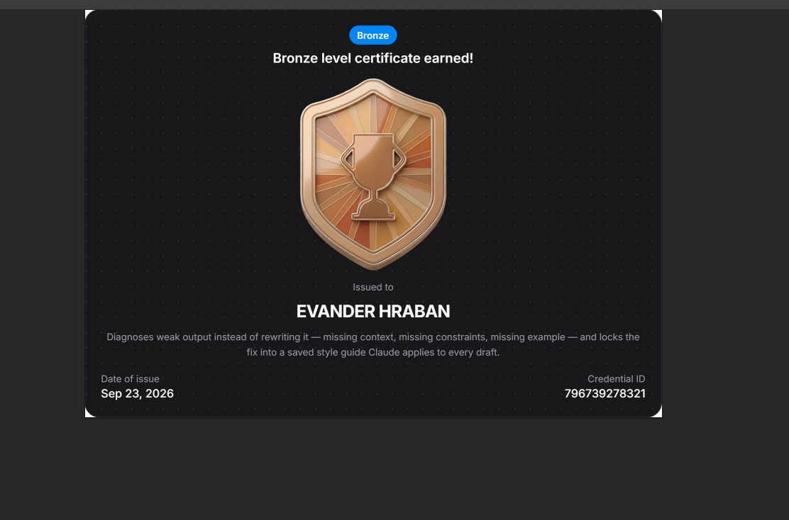
Сертификат персонального плана: глянцевый 3D-кубок, плашка «Bronze», тёмный фон с точечной текстурой. Описание написано языком учебной цели — «Diagnoses weak output instead of rewriting it… locks the fix into a saved style guide».
Экран проектировали как момент награды внутри продукта — отсюда трофей и уровни. Для удержания логика верная. Но этот же артефакт уходит наружу, а для внешней аудитории он уже не награда, а документ о квалификации. Двух задач у одного макета быть не может, и сейчас выиграла внутренняя.
Покупатель — специалист 45+, и самый конвертящий страх в вашем же квизе: «потерять возможности без AI в резюме». Он берёт курс ради строчки, которую можно показать, и получает игровую ачивку. Он не постит. Взрослый специалист не выкладывает в профессиональную сеть глянцевый кубок — в ленте среди отчётов и вакансий это выглядит как скриншот из мобильной игры. Слово Bronze на публичном документе читается как низший уровень: никто не публикует «я получил третье место». Описание нельзя показать чужому — это формулировка цели урока, а не компетенции. И отдельно: иерархия перевёрнута — промежуточный сертификат за модуль оформлен наряднее финального.
Развести два артефакта. Кубок, уровни и анимация остаются внутри — там они работают. Наружу уходит строгий документ: светлый фон, типографика вместо 3D, плоская монохромная эмблема, имя — самый крупный элемент после заголовка, дата и Credential ID со ссылкой верификации. Именно ссылка даёт статус: её можно дать работодателю. Описание переписать на язык компетенции — что человек умеет, а не что делал урок. Уровень с документа не убирать: он несёт смысл. Менять надо метафору. «Bronze» взято из медальной шкалы, где бронза — третье место. Нужна шкала ступеней — Foundation / Practitioner / Advanced — и позиция в последовательности: Level 1 of 3. Тогда человек публикует не «я третий», а «я прошёл первую ступень из трёх». И развести два документа явно: промежуточный — Module certificate, финальный — Programme certificate.
has completed Level 1 — Foundation of the Personal Plan programme. Can diagnose weak AI output and fix it with context, constraints and examples — and maintain a reusable style guide Claude applies to every draft.
10Разбор ошибки есть, но его не находят
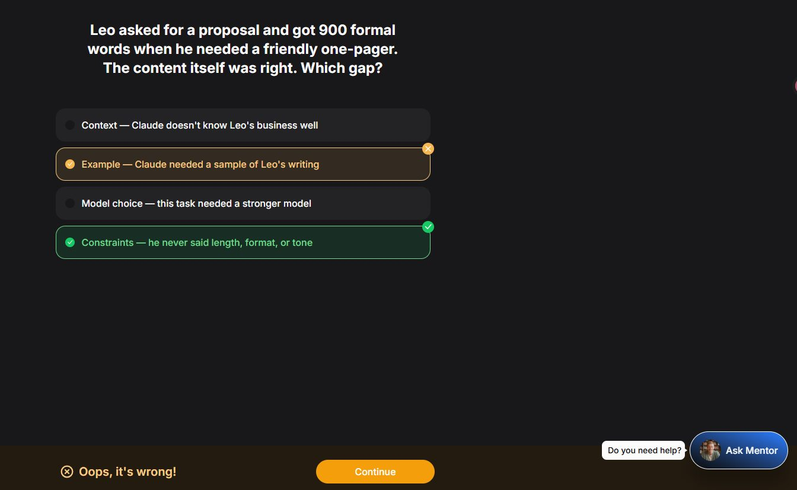
При неверном ответе внизу справа появляется «Do you need help?» и кнопка Ask Mentor — в чате ментор объясняет правильный ответ. Механика рабочая, но заметить её с первого раза трудно: мы нашли не сразу, хотя специально искали.
Помощь сделана по запросу, чтобы не навязываться тому, кто идёт быстро. Логика разумная — вопрос в том, где стоит кнопка и с чем она конкурирует.
Помощь живёт в правом нижнем углу, в формате плавающей кнопки чата — месте, которое люди привыкли пропускать. Путь вперёд стоит в центре нижней панели, оранжевым, прямо в потоке взгляда. Человек в режиме «урок за 15 минут» жмёт Continue и уносит ошибку с собой. Продукт самым ярким элементом уводит от собственной обучающей ценности.
Показывать разбор на месте — карточкой под вопросом, сразу при неверном ответе, без ухода в чат. При неверном ответе Continue делать вторичным, а разбор — основным действием: сейчас в центре внимания стоит выход, а не обучение.
11Настройка шрифта названа «Typescale» и спрятана
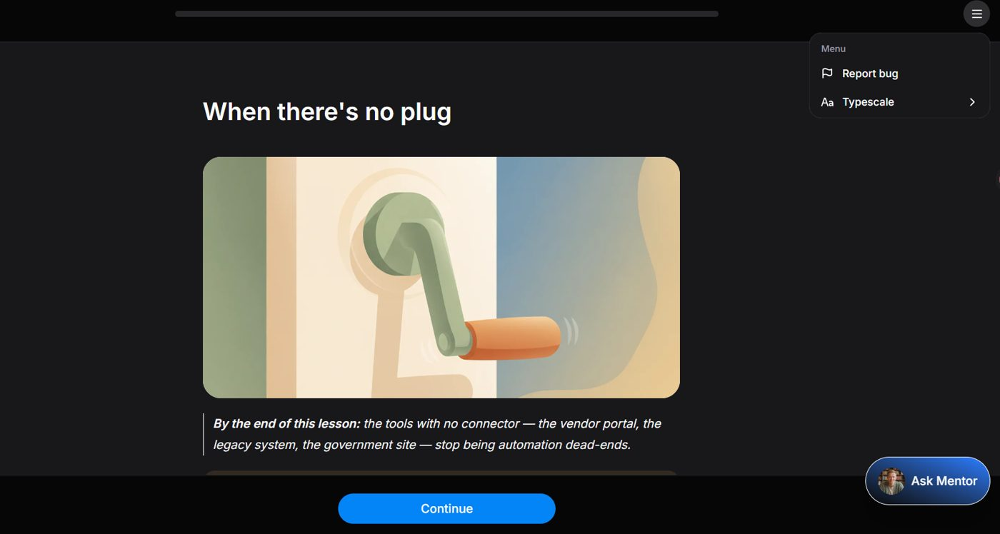
Управление размером шрифта существует, но называется Typescale и спрятано в гамбургер-меню. Соседний пункт — Report bug. Больше в меню ничего нет.
Пункт называли изнутри команды: «typescale» — слово из макета, термин дизайнера. Меню собирали как служебное, не как пользовательское, поэтому в нём оказались рядом настройка чтения и отправка багрепорта.
Ядро покупателей — 45–55 и старше. Возможность увеличить текст для них не украшение, а условие чтения. Продукт её сделал — и назвал так, что её не найдут: человек, которому мелко, ищет «размер текста», «шрифт», «A+», но не «Typescale». Английский у этой аудитории часто неродной, а термин непрозрачен даже для носителя. Отдельно: Report bug первым пунктом меню в платном продукте читается как «мы ещё тестируем».
Переименовать в «Размер текста» и вынести из меню наружу — кнопкой «Aa» рядом с прогрессом, как в читалках. Report bug убрать в настройки. А само меню урока — правильное место для всего, чего сейчас не хватает: слушать, скорость, «продолжить позже», заметки.
12В уроке нет режима прослушивания
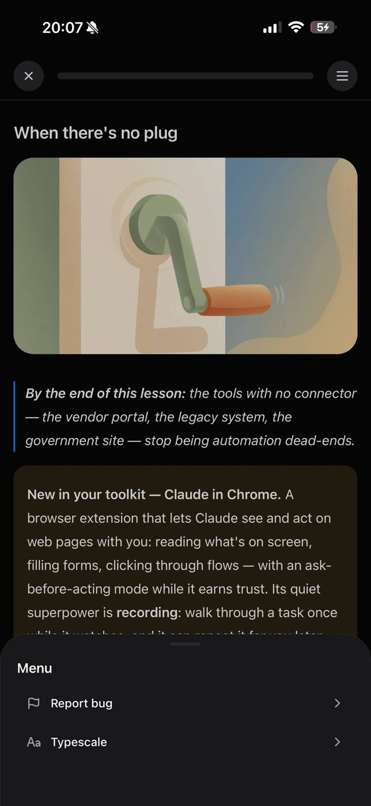
В уроке нет режима прослушивания: контент можно только читать с экрана. В меню его тоже нет.
Урок и упражнение слиты в один поток, а упражнения завязаны на клики — перетаскивание слов, выбор варианта. Аудио в такой формат не встраивается, поэтому его не делали. Это не забытая кнопка, а следствие того, что объяснение и практика живут на одном экране.
Продукт продаёт формат «15–20 минут в день», а основной трафик идёт с телефона. Но у человека 45+ с работой эти двадцать минут чаще всего заняты руками и глазами: дорога, готовка, спортзал. Курс требует сесть и смотреть — то есть претендует на слот, которого у аудитории меньше всего, и игнорирует те, которых больше всего. Отсюда же тянется главный отвал: невозврат на второй-третий день обычно объясняют мотивацией, но чаще это отсутствие подходящего окна. Плюс две группы, которым это критично: зрение после 45 и люди без компьютера — в свободных ответах онбординга есть прямое «I don't own a computer, just work use».
Разделить урок на объяснение и практику. Объяснение получает плеер: слушать можно с выключенным экраном, в фоне, с продолжением с того места, где остановился. На упражнении плеер сам ставит паузу и говорит, что дальше нужен экран. Вход — строкой под заголовком урока: «Слушать · 4 мин». Длительность обязательна: она отвечает на главный вопрос этой аудитории — влезет ли урок в свободное окно. Постоянный контрол — в верхней панели рядом с прогрессом, а не в меню: иначе повторится история с Typescale. Озвучка синтезом речи, а не диктором: дёшево, разворачивается на все курсы и локали сразу. Саму аудиоверсию делать базовой — это удержание, а не апселл. Платным делать офлайн-скачивание.
14Финальный сертификат не вручают — он просто появляется

После последнего модуля ожидаешь, что финальный документ будет чем-то отличаться от промежуточных. По факту это та же карточка в том же месте, только с подписью Platinum. Она остаётся висеть на странице персонального плана, а не вручается. И тут же выясняется, что сертификат нужно ещё подтвердить тестом — об этом заранее не предупреждали. При этом карточка пишет «Platinum level certificate earned!», хотя сертификат не выдан: даты и Credential ID у него нет. А кнопка вместо «Start assessment» показывает «Next attempt in 04:29 AM» — формулировка двусмысленная: читается и как «через 4 ч 29 мин», и как «в 4:29 утра».
Все сертификаты рендерятся одним компонентом, а уровень — просто значение поля. Финал не выделен, потому что в модели данных он ничем не отличается от промежуточного: вся разница в слове «Platinum». Аттестация при этом живёт отдельной сущностью и в роадмап как шаг не попала, поэтому всплывает в конце сюрпризом.
Окончание плана — единственная кульминация всего пути. Человек шёл к ней днями, и ожидание у него соответствующее: сейчас что-то произойдёт. А происходит ровно то же, что происходило после каждого модуля. Когда финал выглядит как рядовой шаг, обесценивается не только он — задним числом обесценивается весь путь. Отсюда прямое следствие для денег: не почувствовав ценности, человек не понесёт сертификат в LinkedIn, не купит печатную версию и не станет узлом реферальной петли. Вся монетизация выдачи стоит на том, что человек в эту секунду гордится. И самое неприятное: после неудачной попытки продукт заставляет ждать. На обучающем продукте ожидание наказывает ровно за то, ради чего человек пришёл, — за попытку.
Развести финал и промежуточные по форме. Промежуточный — карточка в потоке. Финальный — отдельный экран во весь кадр. Разница должна читаться за секунду, до всякого текста. Вручать, а не показывать: короткая сцена выдачи — проявляется имя, ставится печать, и только после неё появляются кнопки. Сказать, где документ теперь живёт: «Сертификат за персональный план сохранён в профиле» со ссылкой. Предупреждать про аттестацию заранее — показать её последним шагом плана на роадмапе. И не писать «earned», пока документ не выдан. Пересмотреть ожидание после неудачной попытки: минуты, а не часы, и с разбором ошибок в паузе. Формулировку таймера сделать однозначной: «Следующая попытка через 4 ч 29 мин». И дать ценности содержание — сразу под документом показать, что с ним можно сделать: скачать, опубликовать, проверить по ссылке, открыть доступ команде.
Что из этого следует
01 Приоритет № 1 — биллинг
Мёртвая кнопка реактивации и оффер, всплывающий каждые два клика, — это одна история: в биллинге никто не прошёл путь пользователя целиком. Продукт не даёт заплатить тому, кто хочет, и выпрашивает у того, кто не хочет.
находки 02 и 0502 Починить сертификат — значит освободить место под апселлы
Момент выдачи сертификата — сильнейшая точка допродажи за весь путь, и сейчас она занята ошибками: чужое описание, старое имя, битая карточка. Починив сборку, освобождаем место под верификацию, места для команды и реферальный код.
находки 01, 04, 0803 Граница платного у ментора — по предмету, а не по качеству
Базовый ментор отвечает хорошо и должен остаться бесплатным. Продавать нужно другое: разбор своих документов и рабочих задач. Демо уже встроено — человек неделю пользовался ментором и убедился, что тот полезен.
04 Три находки — об одном: фичу построили и спрятали
Разбор ошибки, настройка шрифта, память формы. Это самый обидный вид потерь — заплатить за разработку и не получить эффекта. И самый дешёвый в исправлении.
находки 10, 11, 06Из 16 находок восемь бьют по деньгам напрямую, а половина из них чинится правкой одного поля или одной настройки.
Скриншоты сняты при ручном проходе 22–23 сентября 2026. Если имя на сертификатах принадлежит реальному ученику, а не тестовому аккаунту, закрасьте его перед тем, как показывать документ за пределами команды.